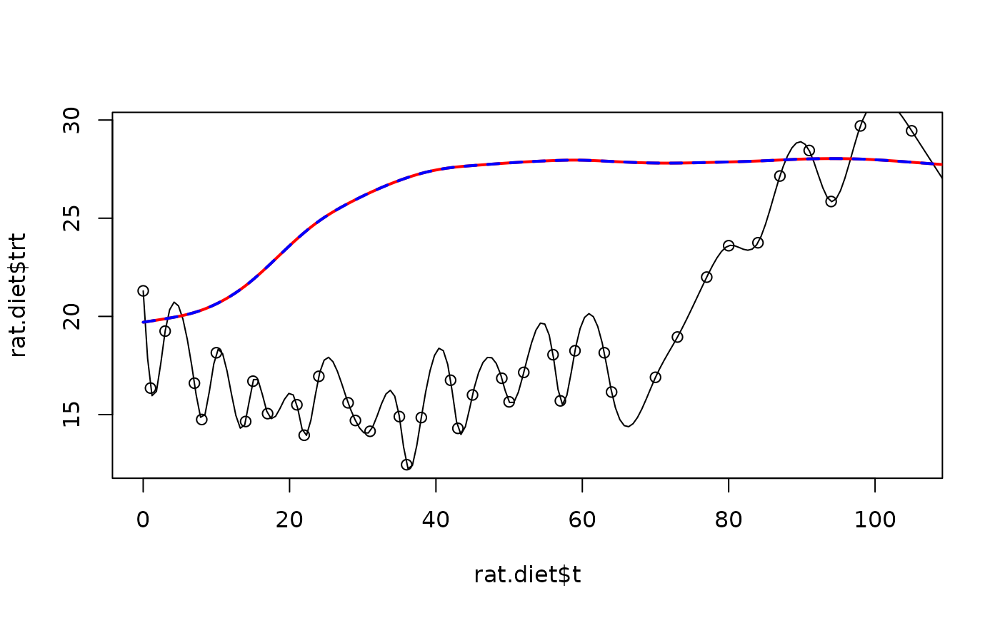

splint.RdA fast, FORTRAN based function for cubic spline interpolation.
splint(x, y, xgrid, wt = NULL, derivative = 0, lam = 0, df =
NA, lambda = NULL, nx = NULL, digits = 8)The x values that define the curve or a two column matrix of x and y values.
The y values that are paired with the x's.
The grid to evaluate the fitted cubic interpolating curve.
Indicates whether the function or a a first or second derivative should be evaluated.
Weights for different obsrevations in the scale of reciprocal variance.
Value for smoothing parameter. Default value is zero giving interpolation.
Same as lam just to make this easier to remember.
Effective degrees of freedom. Default is to use lambda =0 or a df equal to the number of observations.
If not NULL this should be the number of points
to evaluate on an equally spaced grid in the
range of x
Number of significant digits uused to determine what is a replicate x value.
A vector consisting of the spline evaluated at the grid values in xgrid.
Fits a piecewise interpolating or smoothing cubic
polynomial to the x and y values.
This code is designed to be fast but does not many options in
sreg or other more statistical implementations.
To make the solution well posed the
the second and third derivatives are set to zero at the limits of the x
values. Extrapolation outside the range of the x
values will be a linear function.
It is assumed that there are no repeated x values; use sreg followed by predict if you do have replicated data.
See Additive Models by Hastie and Tibshriani.
sreg, Tps
x<- seq( 0, 120,,200)
# an interpolation
splint(rat.diet$t, rat.diet$trt,x )-> y
plot( rat.diet$t, rat.diet$trt)
lines( x,y)
#( this is weird and not appropriate!)
# the following two smooths should be the same
splint( rat.diet$t, rat.diet$con,x, df= 7)-> y1
# sreg function has more flexibility than splint but will
# be slower for larger data sets.
sreg( rat.diet$t, rat.diet$con, df= 7)-> obj
predict(obj, x)-> y2
# in fact predict.sreg interpolates the predicted values using splint!
# the two predicted lines (should) coincide
lines( x,y1, col="red",lwd=2)
lines(x,y2, col="blue", lty=2,lwd=2)
